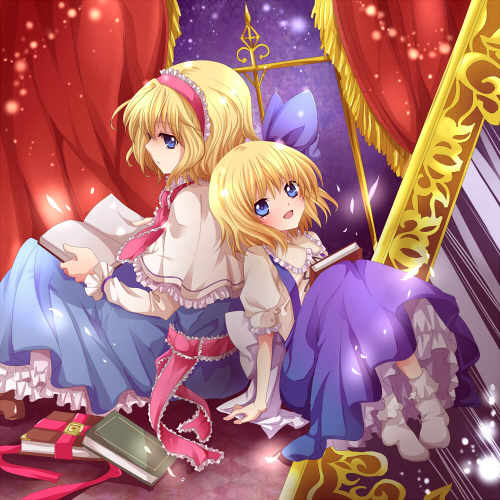

|  | 「I am Alice」 クロスフェードデモ |
|||
| ■TRACK LIST■ 1. 紅月 （亡き王女の為のセプテット） 2. 衝動 -Remix- （U.N.オーエンは彼女なのか？） 3. 滾る陽光、秘められた力 -Remix- （霊地の太陽信仰 ～ Nuclear Fusion） 4. I am Alice（仮題） （ ブクレシュティの人形師/人形裁判 ～ 人の形弄びし少女/プラスチックマインド/etc.） |
■INFOMATION■ コミックマーケット79 12月30日 土曜日 東 Q-17b 「A-HEAD」 イベント価格 200円 ※実際に頒布されるCDのジャケットはまた別のイラストです。あくまでも暫定設置です。 今回は全曲インストになります。 新アレンジ2曲と、過去作から録り直し再録した2曲の全4曲入りです。 なお、今回は手焼きCD-Rなので会場頒布のみで委託等はありません。 |
|||
| ■LINK■ 本作の紹介リンクを貼って下さる方は以下のバナーをお使い下さい。激しく暫定設置。 http://a-head.cc/images/c79banner1.jpg ■応援LINK■          廃した少女は、這い寄る混沌と邂逅す。 THE CAUTION |
|
|||